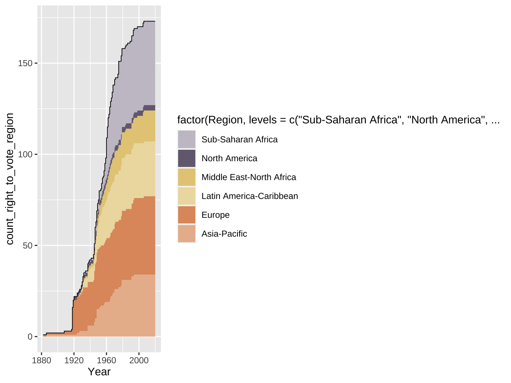
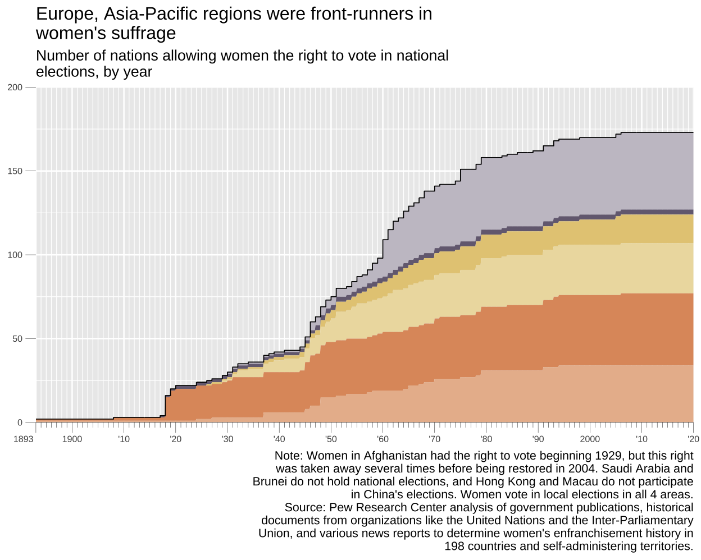
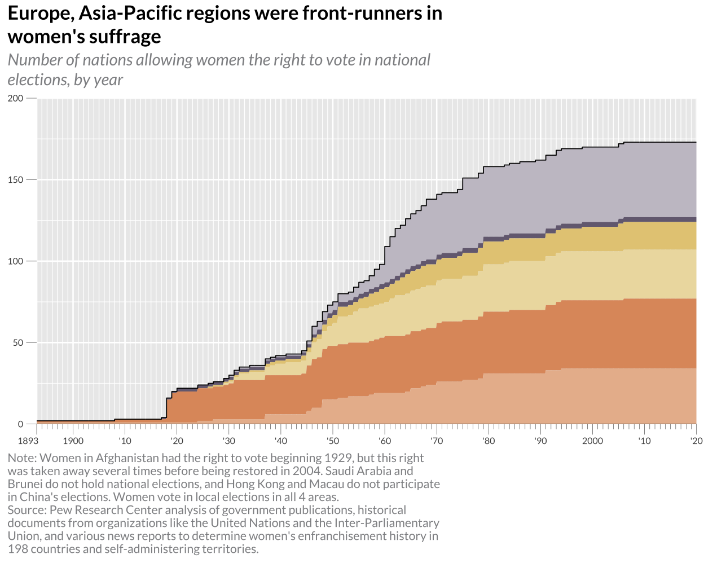
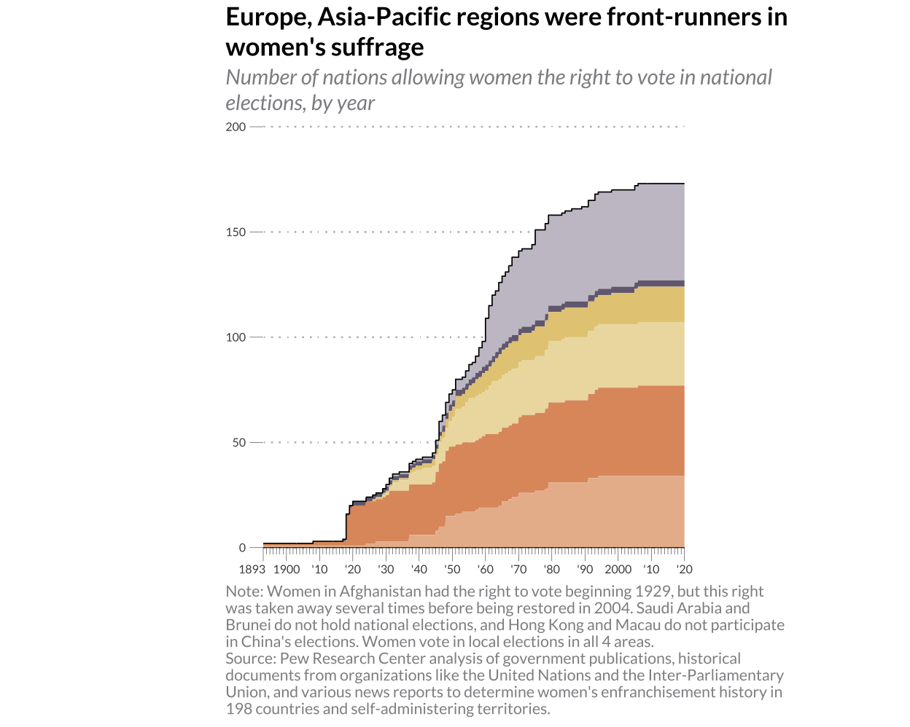
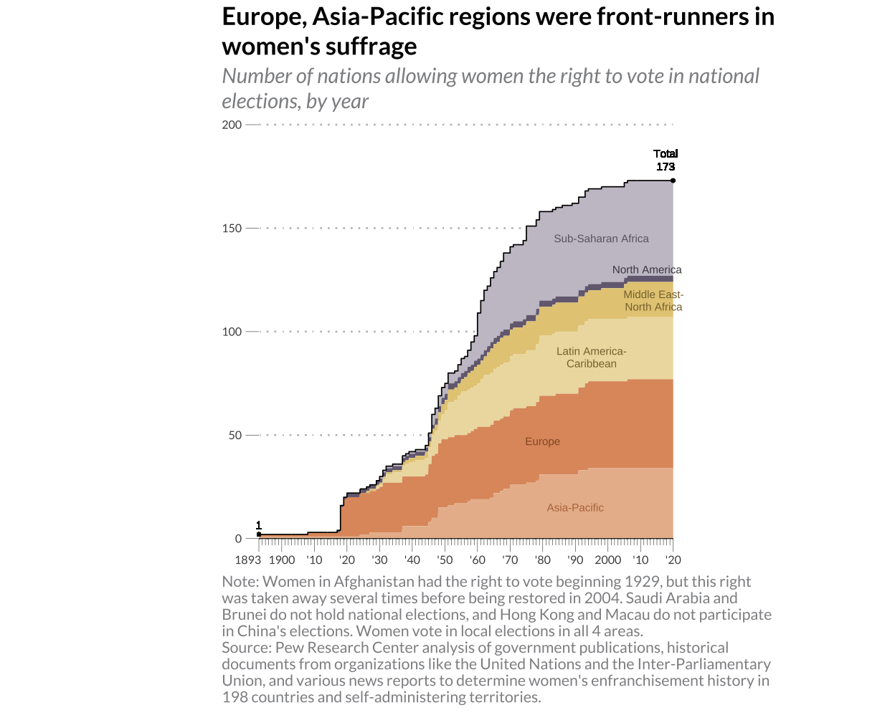
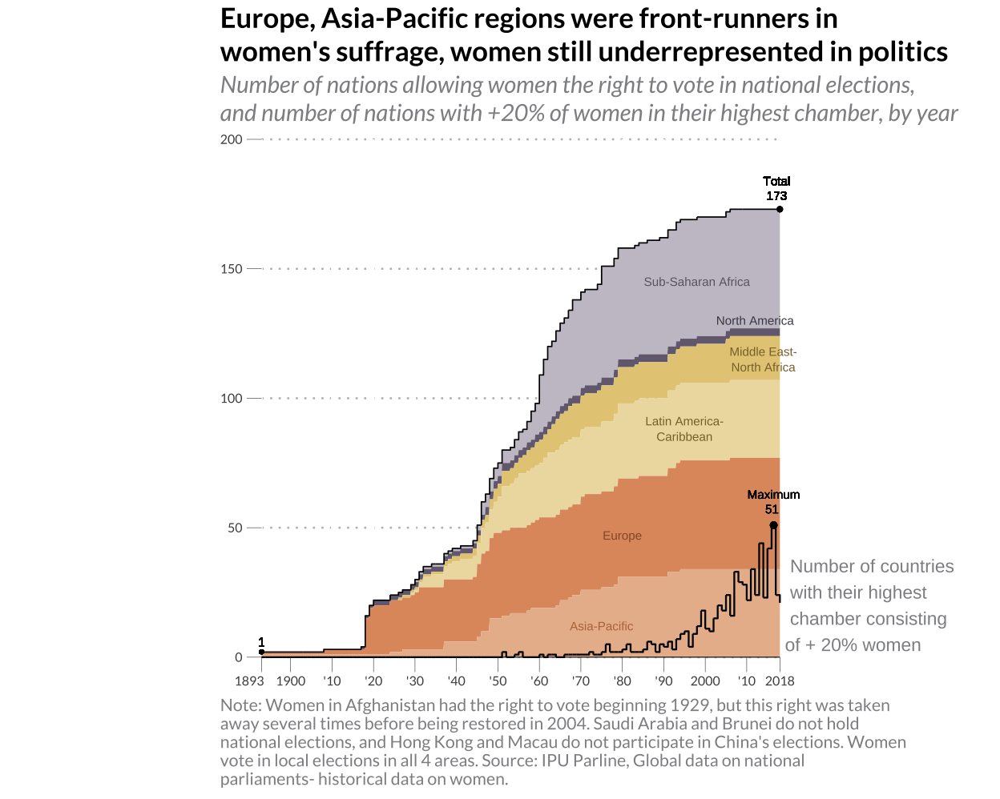

The recreation of a graph illustrating the development of the women’s suffrage movement throughout the years.This graph is replicated and then improved by adding data describing the development of women’s political participation.
I chose a filled area chart illustrating the women’s suffrage movement globally throughout the years. Here is the original chart by the Pew Research Center:
Figure 1: Original graph
You can find the graph originally here.
View and input the data set. Set up the packages I will use in this project.
I got my data from this website: https://data.ipu.org/historical-women. Too late into the project, I realised that this data set doesn’t give me the total data that the original graph did, so they must have made their own data set.
Firstly I need to set my data correct. The data is in groups according to region, which I could not find already readily made in any package, so I had to do it manually. So here I clean and trim the data, while also adding a new column specifying the region.
#remove unnecessary rows and columns
colnames(data_right_to_vote_unclean) <- data_right_to_vote_unclean[6, ]
data_right_to_vote <- data_right_to_vote_unclean[-c(1:6), ] # Remove the rows
#put all the countries into Regions (as in the original graph)
data_right_to_vote <- data_right_to_vote |>
mutate(Region = case_when(
Country %in% c("Angola", "Benin", "Botswana", "Burkina Faso", "Burundi", "Cameroon", "Cabo Verde",
"Gambia (The)", "Central African Republic", "Chad", "Comoros", "Democratic Republic of the Congo",
"Congo", "Côte d'Ivoire", "Djibouti", "Eritrea", "Eswatini", "Ethiopia", "Gabon",
"Gambia", "Ghana", "Guinea", "Equatorial Guinea", "Guinea-Bissau", "Kenya", "Lesotho",
"Liberia", "Madagascar", "Malawi", "Mali", "Mauritania", "Mauritius", "Mayotte", "Mozambique",
"Namibia", "Niger", "Nigeria", "Rwanda", "Senegal", "Seychelles", "Sierra Leone",
"Somalia", "South Africa", "South Sudan", "Sudan", "United Republic of Tanzania", "Togo",
"Uganda", "Zambia", "Zimbabwe", "Sao Tome and Principe")
~ "Sub-Saharan Africa",
Country %in% c("United States of America", "Mexico", "Canada")
~ "North America",
Country %in% c("Algeria", "Bahrain", "Djibouti", "Egypt", "Iraq", "Jordan", "Kuwait", "Lebanon",
"Libya", "Mauritania", "Morocco", "Oman", "Qatar", "Saudi Arabia", "Somalia", "Sudan",
"Syrian Arab Republic", "Tunisia", "United Arab Emirates", "Yemen", "Islamic State of Afghanistan",
"Afghanistan", "Iran (Islamic Republic of)", "Pakistan", "Israel", "West Bank and Gaza")
~ "Middle East-North Africa",
Country %in% c("Aruba", "Argentina", "Antigua and Barbuda", "Bahamas", "Belize", "Bolivia (Plurinational State of)",
"Brazil", "Barbados", "Chile", "Colombia", "Costa Rica", "Cuba", "Cayman Islands",
"Dominica", "Dominican Republic", "Ecuador", "Grenada", "Guatemala", "Guyana", "Honduras",
"Haiti", "Jamaica", "Saint Kitts and Nevis", "Saint Lucia", "Nicaragua", "Panama",
"Peru", "Puerto Rico", "Paraguay", "El Salvador", "Suriname", "Turks and Caicos Islands",
"Trinidad and Tobago", "Uruguay", "Saint Vincent and the Grenadines", "Venezuela (Bolivarian Republic of)")
~ "Latin America-Caribbean",
Country %in% c("Albania", "Andorra", "Armenia", "Austria", "Azerbaijan", "Belarus", "Belgium",
"Bosnia and Herzegovina", "Bulgaria", "Croatia", "Cyprus", "Czech Republic", "Denmark",
"Estonia", "Finland", "France", "Georgia", "Germany", "Greece", "Hungary", "Iceland",
"Ireland", "Italy", "Kazakhstan", "Kosovo", "Latvia", "Liechtenstein", "Lithuania", "Luxembourg",
"Malta", "Republic of Moldova", "Monaco", "Montenegro", "Netherlands", "North Macedonia",
"Norway", "Poland", "Portugal", "Romania", "Russian Federation", "San Marino", "Serbia", "Slovakia",
"Slovenia", "Spain", "Sweden", "Switzerland", "Türkiye", "Ukraine", "United Kingdom", "Vatican City")
~ "Europe",
Country %in% c("Cambodia", "Indonesia", "Lao People's Democratic Republic", "Malaysia", "Myanmar",
"Japan", "Democratic People's Republic of Korea", "Republic of Korea", "Singapore",
"Philippines", "Thailand", "Timor-Leste", "Viet Nam", "China", "Mongolia", "Armenia",
"Azerbaijan", "Georgia", "Kyrgyzstan", "Tajikistan", "Uzbekistan", "Turkmenistan" ,
"Bangladesh", "Bhutan", "India", "Maldives", "Nepal", "Pakistan", "Sri Lanka",
"Micronesia (Federated States of)", "Fiji", "French Polynesia", "Kiribati",
"Marshall Islands", "Nauru", "New Caledonia", "New Zealand", "Palau", "Solomon Islands",
"Tonga", "Tuvalu", "Vanuatu", "Samoa" , "Papua New Guinea", "Wallis and Futuna")
~ "Asia-Pacific",
TRUE ~ "Other"))
#remove and rename columns
data_right_to_vote <- data_right_to_vote |>
relocate(Region, .after = Country) |>
relocate(`Women’s right to vote`, .after = Region) |>
select(2:4) |>
rename(Year = `Women’s right to vote`)Here I widen the data and get a column for each year between 1882 and 2020. During the year that women got the right to vote in each country we assign TRUE.
for(i in 1882:2020) {
data_right_to_vote[[as.character(i)]] <- 0
}
for(i in 1:nrow(data_right_to_vote)) {
data_right_to_vote[[data_right_to_vote[i, "Year"]]][i] <- TRUE
}Here I removing all the duplicates, and keeping the row with the lowest value for year. As this is how I chose to define the data, in some countries they have multiple rows for different stages of women’s suffrage (eg. in 1912 women got the right to vote in local elections and in 1920 national elections).
Then I bring in the data to be narrow, so we are left with an obervation for every year and country, and the year that women had gotten the first initial taste of suffrage, returns TRUE.
data_right_to_vote <- data_right_to_vote |>
pivot_longer( cols = c("1882":"2020"), names_to = "Year",
values_to = "Right_to_vote"
)Here I transform the data so that for for every year that women had the right to vote, it returns true. It returns false for every year they did not in each country.
Here I create a new data set that tells us how many countries had given women the right to vote in each region in every year.
data_right_to_vote$Year <- as.numeric(data_right_to_vote$Year)
voting_data <- data_right_to_vote |>
group_by(Year, Region) |>
summarize(count_right_to_vote_region = sum(Right_to_vote) ) |>
ungroup() We start by lagging the valuables so that we can get the effect of the steps in the graph. Then we create the first step of the graph and get the main graph characteristics. So the filled area of each region, this was surprisingly difficult to get, because I tried using geom_area() and geom_step() in the same function but I couldn’t combine them. Then I was able to achieve the result with the lagging of the values (to get the step like borders).
# generate new points (lagged values) to "hold" the value until the next step
df <- voting_data |>
group_by(Region) |>
mutate(count_right_to_vote_region = lag(count_right_to_vote_region)) |>
na.omit() |>
rbind(voting_data)
n <- ggplot() +
geom_area(data = df, aes(Year, count_right_to_vote_region,
fill = factor(Region, levels = c("Sub-Saharan Africa", "North America", "Middle East-North Africa", "Latin America-Caribbean", "Europe", "Asia-Pacific")))) +
scale_fill_manual(values=c("#c7c3cc", "#756b80", "#e5cb84", "#edddae", "#df996b", "#e9ba9b")) +
theme_gray(base_size = 10, base_family="lato")
nHere we add on to main characteristics of the graph and add the top line showing total numbers of countries that have given women the right to vote.
sumdf <- voting_data |>
group_by(Year) |>
mutate(sum_count_right_to_vote = sum(count_right_to_vote_region)) |>
ungroup()
n <- n +
geom_step(data = sumdf, aes(Year, sum_count_right_to_vote), linewidth = 0.3)
n
Here I take steps to format the axis and all the details of the axes and the labs. The most difficult part here was figuring out the ticks, but once I found the ggh4x package, it was pretty straight forward.
n <- n + theme(legend.position = "none",
axis.title.x = element_blank(),
axis.title.y = element_blank())
x_break <- c(1893, 1900, 1910, 1920, 1930, 1940, 1950, 1960, 1970, 1980, 1990, 2000, 2010, 2020 )
x_break_names <- c("1893 ", "1900", "'10", "'20", "'30", "'40", "'50", "'60", "'70", "'80", "'90", "2000", "'10", "'20")
minor_breaks_v <- c(1893:2020)
n <- n +
scale_x_continuous(
name = NULL,
breaks = x_break,
labels = x_break_names,
limits = c(1893, 2020),
minor_breaks = seq(1893,2020, by= 1),
expand = c(0, 0),
guide = "axis_minor" ) +
scale_y_continuous(
limits = c(0, 200),
expand = c(0, 0)) +
theme(
axis.text.x = element_text(size = 6),
axis.text.y = element_text(size = 6),
axis.ticks = element_line(size = 0.1),
axis.ticks.length = unit(7, "pt"),
ggh4x.axis.ticks.length.minor = rel(0.5)) +
labs(
title = "Europe, Asia-Pacific regions were front-runners in\nwomen's suffrage",
subtitle = "Number of nations allowing women the right to vote in national\nelections, by year",
caption = "Note: Women in Afghanistan had the right to vote beginning 1929, but this right\nwas taken away several times before being restored in 2004. Saudi Arabia and\nBrunei do not hold national elections, and Hong Kong and Macau do not participate\nin China's elections. Women vote in local elections in all 4 areas.\nSource: Pew Research Center analysis of government publications, historical\ndocuments from organizations like the United Nations and the Inter-Parliamentary\nUnion, and various news reports to determine women's enfranchisement history in\n198 countries and self-administering territories.") +
geom_hline(
yintercept = 0, color = "black", size= 0.2)
n
Here I further adjust the formatting of the graph, so that the titles and caption matched the original as closely as possible. I chose the font Lato from google fonts to achieve this effect.
n1 <- n +
theme(
plot.title = element_text(face = "bold",
size = 13,
hjust = 0,
vjust = 1.5,
lineheight = 1),
plot.title.position = "plot",
plot.subtitle = element_text(
face = "italic",
color = "#8f9092",
size = 11,
hjust = 0,
vjust = 1.8,
lineheight = 1),
plot.caption = element_text(
color = "#8f9092",
size = 8,
hjust = 0),
plot.caption.position = "plot"
)
n1
Here I adjust the background formatting and the clipping of the graph. I turn off clipping in the coord_fixed, to allow my future annotations to continue past the limits.
n2 <- n1 + theme(
panel.background = element_rect(fill = "white"),
panel.grid.major.y = element_line(color = "gray", linetype = "dotted"),
panel.grid.minor.y = element_blank(), # Remove minor grid lines)
text = element_text(family = "lato"),
aspect.ratio = 1.4
) +
coord_fixed(0.8, clip = "off")
n2Here I add the annotations for each region.
#Africa label
n3 <- n2 + annotate(
"text",
x = 1998, # X-coordinate
y = 145, # Y-coordinate
label = "Sub-Saharan Africa", # Text to display
size = 2, # Text size
color = "#6f6673" # Text color
)
#North America
n3 <- n3 + annotate(
"text",
x = 2012,
y = 130,
label = "North America",
size = 2,
color = "#4c4852"
)
#Middle East- North Africa
n3 <- n3 + annotate(
"text",
x = 2014,
y = 118,
label = "Middle East-",
size = 2,
color = "#88723b") + annotate(
"text",
x = 2014,
y = 112,
label = "North Africa",
size = 2,
color = "#88723b")
#Latin America- Caribbean
n3 <- n3 + annotate(
"text",
x = 1995,
y = 96,
label = "Latin America-",
size = 2,
color = "#88723b" ,
vjust = 2
) + annotate(
"text",
x = 1995,
y = 90,
label = "Caribbean",
size = 2,
color = "#88723b" ,
vjust = 2
)
#Europe
n3 <- n3 + annotate(
"text",
x = 1980,
y = 47,
label = "Europe",
size = 2,
color = "#965a31"
)
n3
Here I add the annotations (point and text) for y=1 and y=73 (the final total value).
n4 <- n3 +
geom_point(data = subset(data_right_to_vote, Year == 2020), aes(x = 2020, y = 173), color = "black", size = 0.4) +
geom_text(data = subset(data_right_to_vote, Year == 2020),
aes(label = "Total\n 173", x= 2014, y=166),
vjust = -1.2, hjust = 0, size = 2, lineheight = 1) +
geom_point(data = subset(data_right_to_vote, Year == 1893), aes(x = 1893, y = 2), color = "black", size = 0.4) +
geom_text(data = subset(data_right_to_vote, Year == 1893),
aes(label = "1", x= 1893, y=1),
vjust = -1, hjust = 0.5, size = 2, lineheight = 1) +
geom_segment(aes(x = 1893, y =220, xend = 2020, yend = 220,
color = "black", size = 1))
# adding last annotation, Asia-Pacific
n5 <- n4 + annotate(
"text",
x = 1990,
y = 15,
label = "Asia-Pacific",
size = 2,
color = "#b97648" )And I am finally led to the final graph, which is as close as I can get it to the original!
n5
Originally I considered different ways to improve the graph. I made some different iterations of the graph, most notably trying to make the graph proportional to each region. But once I had come to the main idea, the overall outlook and shape looked quite similar, and the message of the graph got a little lost in my opinion. It was not clear what the graph’s message was in this form I had experimented with.
To me, the main information the graph is trying to convey is when and which general regions were at the forefront of the women’s suffrage movement. I wanted to maintain this, but add another element, showing the interaction between women’s suffrage and women’s political participation (in the form of % of women in politics).
So I was able to obtain data on the amount of women in parliament/ highest chambers of all nations. Here I read and format the data to be appropriate for my use.
data_women_in_parliament_unclean <- read_xlsx("women_in_parliament-historical_database-1945_to_2018.xlsx")
data_women_in_parliament <- data_women_in_parliament_unclean |>
select(1,4,9) |>
rename(Women_in_parliament = '% Of Women in Chamber')
data_women_in_parliament$Women_in_parliament <- as.numeric(data_women_in_parliament$Women_in_parliament)Originally I wanted to explore how the average % of women in their nations’ highest chambers developed over time. However, since I had the scale 0-200 in use for the y-axis, I decided to change my approach to avoid a dual axis.
I decided to explore and graph the amount of nations having 20% or more of women represented in their highest chamber. Here I mutate the data to find the number of countries each year with 20% or over.
#finding the amount of countries with over 20% women in parliament for each year
improved_data <- data_right_to_vote |>
left_join(data_women_in_parliament, by = c("Country", "Year"))
improved_data <-improved_data |>
mutate(
more_20_perc = case_when
(Women_in_parliament >= 0.2 ~ TRUE,
Women_in_parliament < 0.2 ~FALSE,
is.na(Women_in_parliament) ~ NA))
improved_data <- improved_data |>
group_by(Year) |>
mutate(count_20_perc = sum(more_20_perc, na.rm = TRUE))Here I add the line to visualize the amount of countries having more than 20% female highest chambers.
Since the data only goes to 2018, I changed the axes slightly. Then I also go on to update the other information in the graph, for eg. the titles, captions etc.
x_break <- c(1893, 1900, 1910, 1920, 1930, 1940, 1950, 1960, 1970, 1980, 1990, 2000, 2010, 2018 )
x_break_names <- c("1893 ", "1900", "'10", "'20", "'30", "'40", "'50", "'60", "'70", "'80", "'90", "2000", "'10", "2018")
g <- g +
scale_x_continuous(name = NULL, breaks = x_break, labels = x_break_names, limits = c(1893, 2018), minor_breaks = minor_breaks_v, expand = c(0, 0) ) +
scale_y_continuous(limits = c(0, 200), expand = c(0, 0)) +
theme(axis.text.x = element_text(size = 6),
axis.text.y = element_text(size = 6),
axis.ticks = element_line(size = 0.1),
axis.ticks.length = unit(7, "pt"),
ggh4x.axis.ticks.length.minor = rel(0.5))
g <- g + labs(
title = "Europe, Asia-Pacific regions were front-runners in\nwomen's suffrage, women still underrepresented in politics",
subtitle = "Number of nations allowing women the right to vote in national elections,\nand number of nations with +20% of women in their highest chamber, by year",
caption = "Note: Women in Afghanistan had the right to vote beginning 1929, but this right was taken\naway several times before being restored in 2004. Saudi Arabia and Brunei do not hold\nnational elections, and Hong Kong and Macau do not participate in China's elections. Women\nvote in local elections in all 4 areas. Source: IPU Parline, Global data on national\nparliaments- historical data on women."
)
gFinally I add the annotations and labels to this to illustrate the addition better.
g <- g +
geom_point(data = subset(voting_data, Year == 2018), aes(x = 2018, y = 173), color = "black", size = 0.7) +
geom_point(data = subset(voting_data, Year == 2016), aes(x = 2016.5, y = 51), color = "black", size = 1) +
geom_text(data = subset(voting_data, Year == 2016), aes(label = "Maximum\n51 ", x = 2016.5, y = 60), size = 2, lineheight = 1) +
annotate(
"text",
x = 2018, y = 20,
label = " Number of countries\n with their highest\n chamber consisting\n of + 20% women",
hjust = 0, vjust = 0.5,
color = "#8f9092", size = 3) +
annotate(
"text",
x = 1975,
y = 12,
label = "Asia-Pacific",
size = 2,
color = "#b97648" )Finally we have the final graph with improvements.
g